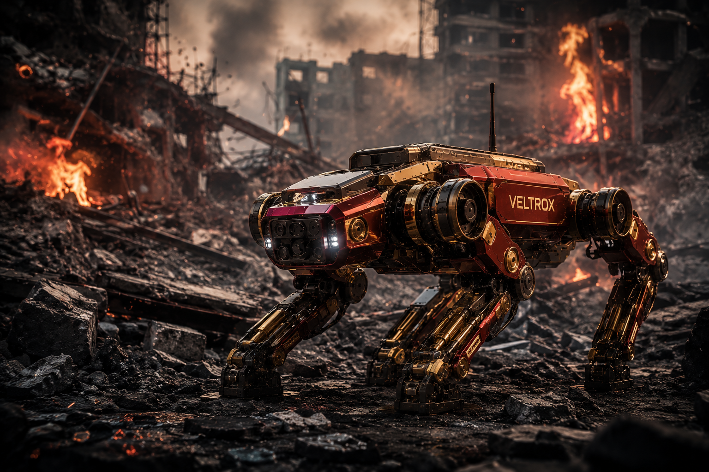
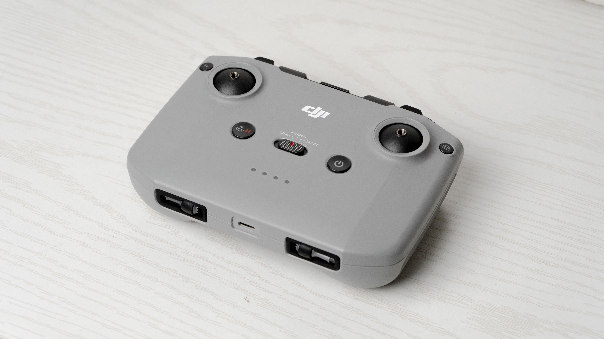

VELTROX의 AI 기술을 활용하여 인간이 접근하기 불가능한 극한 재난 환경에서 자율적으로 작동하는 로봇 시스템을 구축합니다. 열화상 카메라와 음향 센서를 통해 생존자를 신속하게 감지하고, 실시간 데이터 전송으로 현장 상황을 정확하게 파악합니다. 골든타임을 지키기 위해 VELTROX의 재난 대응 로봇이 가장 먼저 움직입니다.

GPS 신호가 차단된 붕괴 건물 내부나 지하 환경에서도 SLAM 기술을 활용하여 스스로 경로를 탐색하고 장애물을 회피합니다.

열화상 카메라로 체온을 감지하고 음향 센서로 미세한 소리를 포착하여 잔해 속 생존자의 위치를 신속하고 정확하게 파악합니다.

위험 현장의 영상, 온도, 유독가스 농도 등 환경 데이터를 실시간으로 지휘본부에 전송하여 정확한 상황 판단과 신속한 의사결정을 지원합니다.
화재, 유독가스, 방사선, 붕괴 현장 등 인간이 접근할 수 없는 극한 환경에서도 안정적으로 운용 가능한 내열·방진·방폭 설계가 적용되었습니다.

안전 지역에서 운영자가 실시간 영상을 보며 로봇을 원격으로 정밀 제어하여 2차 피해 없이 현장 대응이 가능합니다.